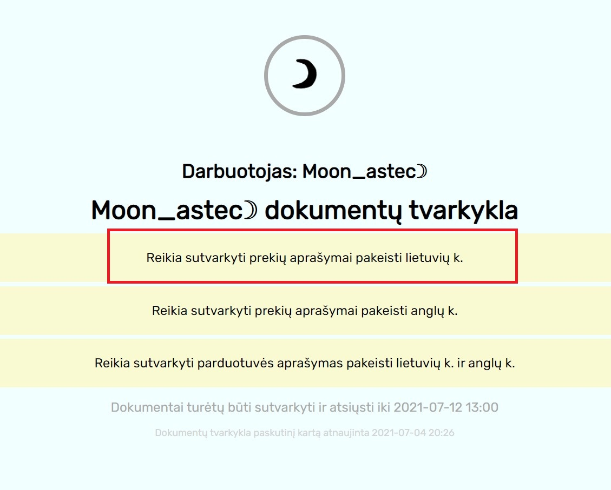
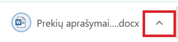
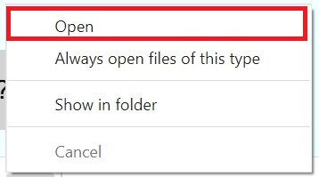
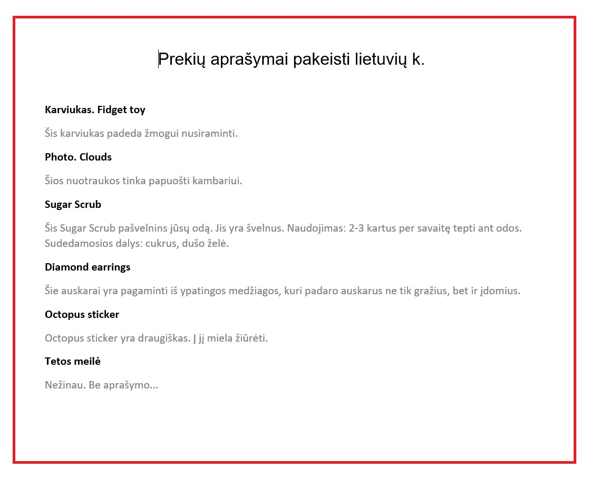
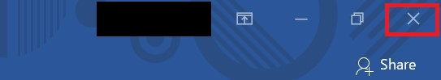
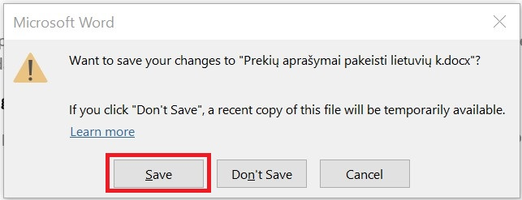
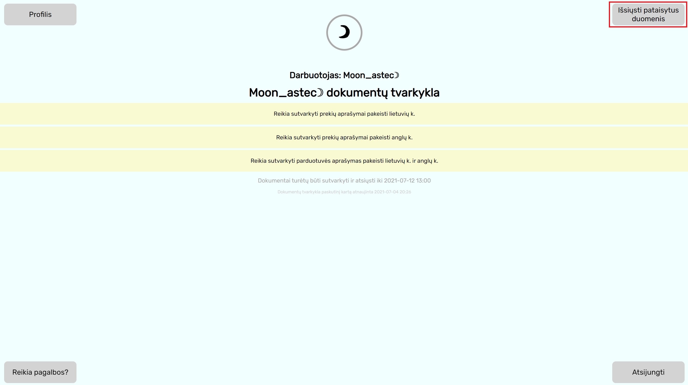
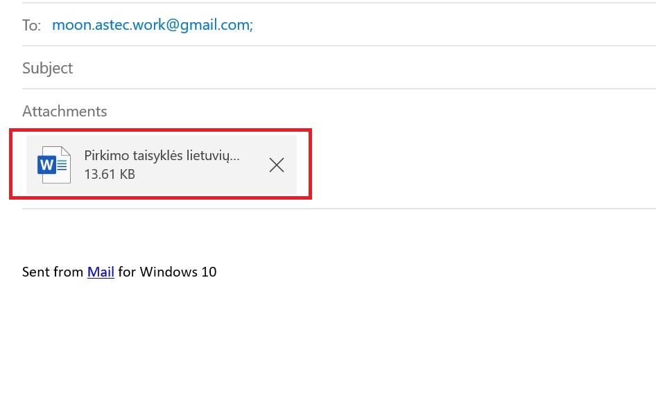

1. Paspauskite ant dokumentų, kuriuos norite tvarkyti (geltonas fonas).
2. Dokumentai parsisiųs į jūsų kompiuterį. Atidarykite juos (dažniausiai Word (.doc, .docx) formatas).
 3. Pataisykite dokumentus.
4. Baigę taisyti, uždarykite dokumentų langą (nepamirškite išsaugoti). Svetainėje spauskite "Išsiųsti pataisytus dokumentus".
  5. Jus automatiškai perkels į el. pašto adresą, kuriame turite pridėti dokumentų failą ir išsiųsti (jei nepavyko, siųskite laišką moon.astec.work@gmail.com).
6. Temą nurodykite "Pataisyti duomenys". Laiške parašykite darbuotojo vardą bei kodą.

Instrukcija paskutinį kartą atnaujinta 2021-07-04 21:14